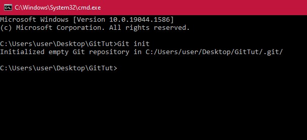

Git Tutorial
Following are the steps that you need to follow to set-up and run your own Git hub account and Git
First of all if you have'nt made your account on git hub ,Kindly click the link below and create your account on Git hub
github.com

Now download Git according to the operating system of your computer bu clicking on the following link
gitdownload.com
Now follow the following steps to sync your work on github by using git
Step # 1
Create a folder in which you'll be placing all your project work to be uploaded on git hub, then trace the path select it, write cmd, and hit enter.

You'll see a command prompt window like the one below

Step # 2
Add your project files or any files you wawnt to upload on github in this folder created, like the one added below

Step # 3
On the cmd window write the following command git init as shown below and hit enter

This step will initialise a git repository in your folder and then can be pushed on git hub
Step # 4
Now as you've created a local repository using " git init " now you need to create a repository on git hub for the purpose of stagging local repository data on your wep repository.Click the '+' sign as shown below and create a repository.

Give a suitable name to your repository and hit enter

Now you'll see following commands, copy them and keep them somewhere to reuse them
Step # 3
Now add the files that you have created in your project to your local repository by using " git add . " command

Step # 3
Now check the status of your local repository by using " git status " command

This will tell you how many files have changed, how many are added or not addes, and how many need to be commited
Step # 3
Now adding some data to the file and again checking the status

Run git status command again, now you can see that some changes are made to our file which are neither added to local repository nor commited.

You can use git add . command to add these changes in local repository and then commiting chnages will be told further
Step # 3
Now " git commit " command will be used to keep a track of all the changes done this can be pushed on web repository and on each commit a new version of project will be upload, i.e., it will helpyou to keep each milestone of your project separately on git hub, commit your work as shown below: